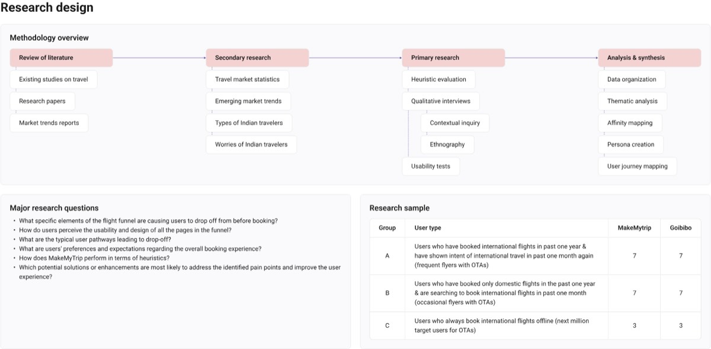
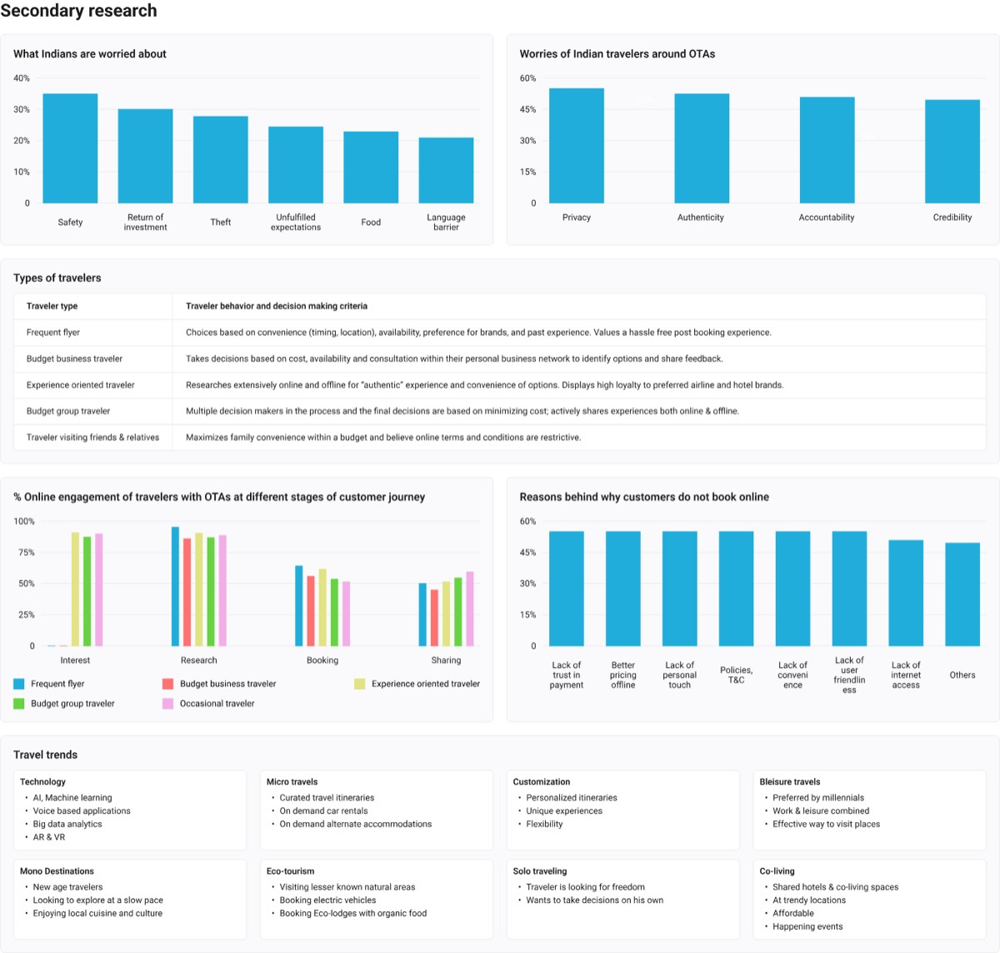
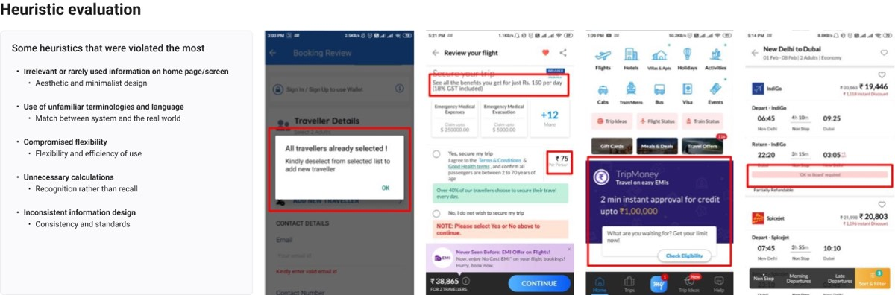
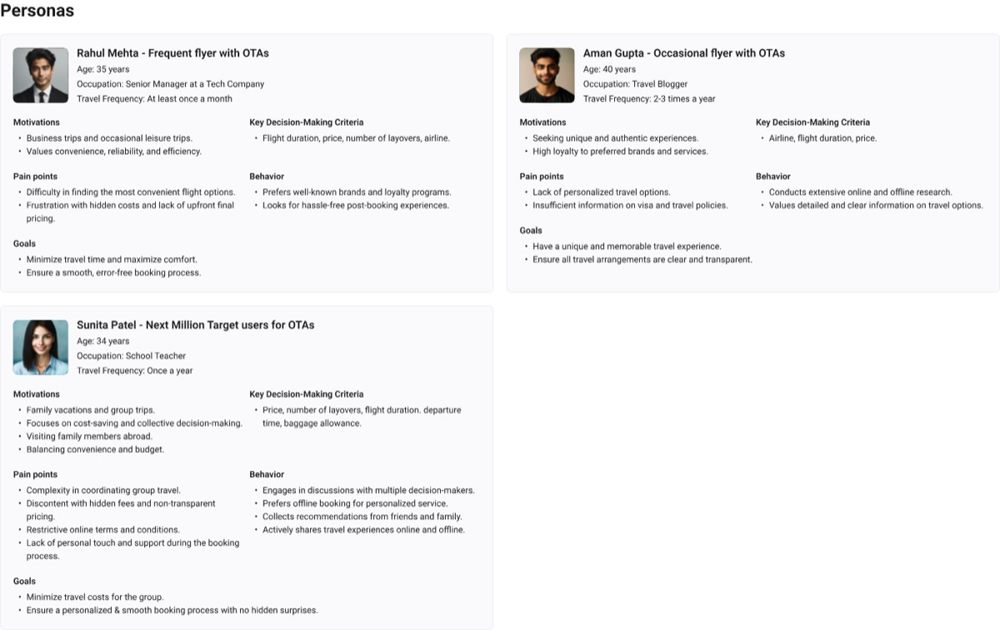
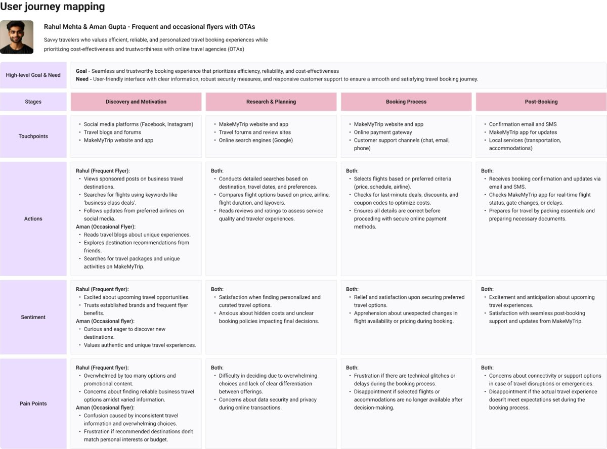
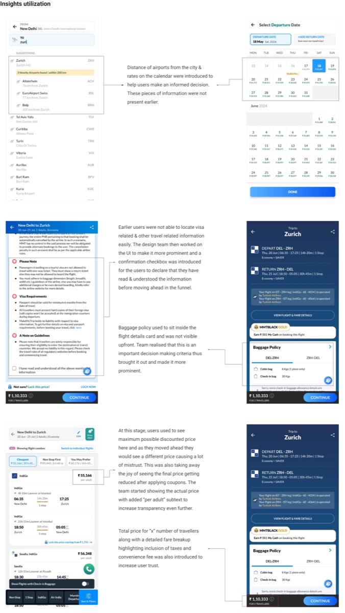

The mystery of international flights
- Subject
- MakeMyTrip international flight booking
- Methods
- Literature and secondary research, heuristic evaluation, interviews, contextual inquiry, usability tests
- Research sample
- 34 participants: 17 users each of MakeMyTrip and Goibibo
About 30% of users leave before the flight review page. The study asked where, and why.
Brief and objectives
MakeMyTrip's international flight booking platform was meant to give a smooth booking experience. But roughly 30% of users drop off before the flight review page, an estimated annual revenue loss of $500,000. The goal was to cut drop-off by 20%, worth about a $100,000 revenue increase a year and a 15% rise in completed bookings.
- Understand the current flow through the booking funnel
- Find the pain points users have with it
- Evaluate the experience against usability heuristics
- Observe how users behave in the app
- Gather feedback on the current offering
- Identify where the funnel can improve
Research design
Four stages: a review of literature, secondary research, primary research, and analysis and synthesis. Primary research combined heuristic evaluation, qualitative interviews (contextual inquiry and ethnography) and usability tests, run on both MakeMyTrip and a competitor, Goibibo.

| Group | User type | MakeMyTrip | Goibibo |
|---|---|---|---|
| A | Booked international flights in the past year and showed intent again in the past month (frequent flyers with online travel agents) | 7 | 7 |
| B | Booked only domestic flights in the past year and searched for international flights in the past month (occasional flyers) | 7 | 7 |
| C | Always book international flights offline (the next million target users) | 3 | 3 |
Questions
- Which parts of the funnel make users drop off before booking?
- How do users see the usability and design of each page?
- What paths lead to drop-off?
- What do users prefer and expect from the booking experience?
- How does MakeMyTrip perform against usability heuristics?
- Which changes are most likely to fix the pain points?
Secondary research
The market data set the context. Indian travellers worry most about safety, return on investment and theft. Their top worries about online travel agents are privacy, authenticity, accountability and credibility.
| Traveller type | How they decide |
|---|---|
| Frequent flyer | Chooses on convenience (timing, location), availability, brand preference and past experience. Values a hassle-free experience after booking. |
| Budget business traveller | Decides on cost, availability and advice from a personal business network. |
| Experience-oriented traveller | Researches widely online and offline for an authentic experience. Loyal to preferred airline and hotel brands. |
| Budget group traveller | Several decision-makers, with the final choice driven by minimizing cost. Shares experiences online and offline. |
| Traveller visiting friends and relatives | Maximizes family convenience within a budget, and finds online terms and conditions restrictive. |

People who don't book online give reasons that online products can answer: lack of trust in payment, better pricing offline, lack of personal touch, policies and terms, lack of convenience, lack of user-friendliness, and lack of internet access. Trends to watch include voice and AI-based search, micro-travel, customization, bleisure, solo travel, eco-tourism and co-living.
Heuristic evaluation

The heuristics violated most often:
- Aesthetic and minimalist design: irrelevant or rarely used information on home and booking screens
- Match between system and the real world: unfamiliar terminology and language
- Flexibility and efficiency of use: compromised flexibility
- Recognition rather than recall: unnecessary calculations for the user
- Consistency and standards: inconsistent information design
Who we designed for
- Rahul Mehta, frequent flyer (35, senior manager at a tech company, travels about monthly): wants the most convenient flight and no hidden costs. Decides on flight duration, price, layovers and airline.
- Aman Gupta, occasional flyer (40, travel blogger, 2 to 3 trips a year): wants unique, authentic trips. Frustrated by little personalization and too little visa and policy information.
- Sunita Patel, next-million user (34, school teacher, one trip a year): plans family trips and compares prices with several decision-makers. Prefers offline booking for personal service, and finds terms restrictive and fees hidden.


Journey mapping the frequent and occasional flyers across discovery, research and planning, booking, and post-booking showed the same pattern at every stage. Excitement is high early. Anxiety about hidden costs, unclear policies and data privacy rises in planning and booking. Post-booking, concern shifts to support when plans change.
What the insights were
- What decides a booking: price, flight duration, number of layovers, departure time, baggage, airline.
- Why people book offline: convenience, fear of making errors, personalization, accountability.
- What drives drop-off: not being able to pick the right airport when a city has several; unclear decision parameters and policies; a final price shown late, which confuses people and erodes trust; too little visa information; discounts offset by convenience fees and taxes.
How the insights were used

The page records these design changes that followed the research. It does not record the effect on drop-off.
- Airport search and calendar: airport distance from the city and fares on the calendar were added, so users can decide with the facts in front of them.
- Visa and travel information: it had been hard to find, so it was made more prominent, with a checkbox for users to confirm they have read and understood it before moving on.
- Baggage policy: it sat inside the flight details card and wasn't visible up front. It was pulled out and made prominent, because baggage is a key decision criterion.
- Price transparency: users saw the lowest possible price on the list, then a different price later, which created mistrust. The team now shows the actual price with a “per adult” subtext, a total for the number of travellers, and a detailed fare breakup showing taxes and convenience fee.